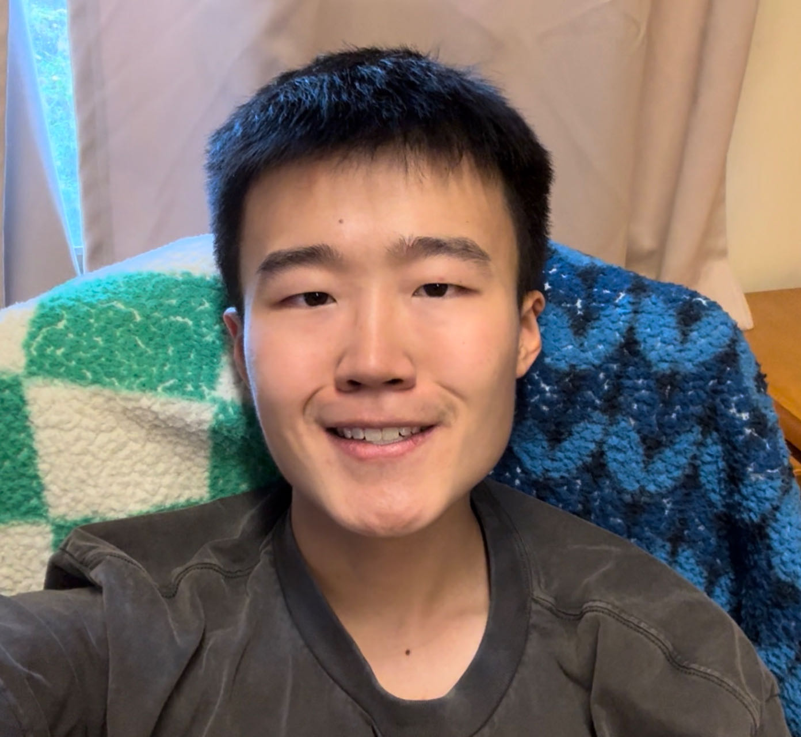

Jingyuan HuangUndergraduate Student
ARISE Lab |
 |
Hi, there! My name is Jingyuan Huang, and I am currently a senior student specializing in Artificial Intelligence at The Chinese University of Hong Kong (CUHK). I am actively seeking opportunities for PhD programs. At present, I am collaborating with Professor Michael R. Lyu at CUHK and Professor Jieyu Zhao at the University of Southern California (USC).
My research interests primarily focus on the biases and robustness of large language models and vision-language models.
LLMs as GeoGuessr Masters: Exceptional Performance, Hidden Biases, and Privacy Risks.
Preprint